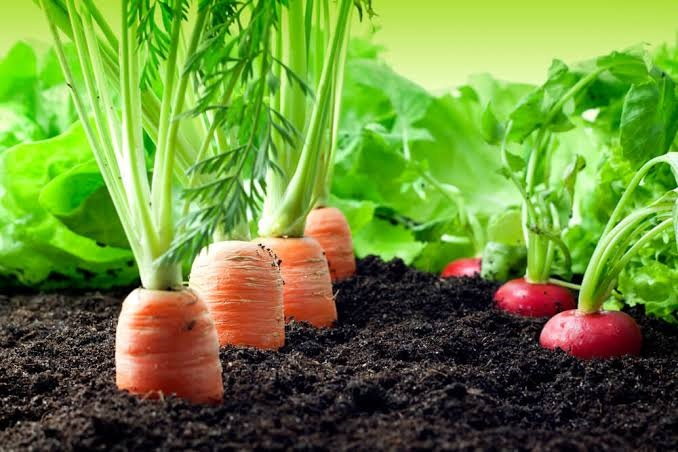
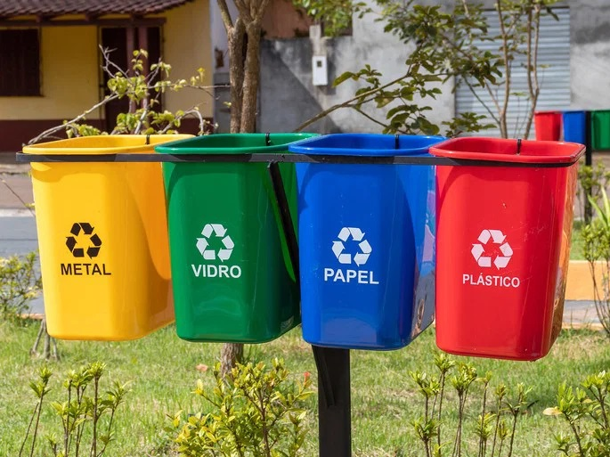

Horta Comunitária
Alimento saudável cultivado pelos moradores em um terreno antes abandonado.
Saiba maisONG ambiental · cuidando do bairro, da água e do lixo
A Raízes Verdes reúne moradores e voluntários para plantar hortas, separar o lixo e cuidar da água. Conheça os projetos e participe.
Quero ser voluntário
Alimento saudável cultivado pelos moradores em um terreno antes abandonado.
Saiba mais
Coleta e separação de materiais, com oficinas de educação ambiental.
Saiba mais
Mudas nativas plantadas em praças e margens de córregos.
Saiba maisOuça um trecho de floresta tropical e lembre por que preservar importa.